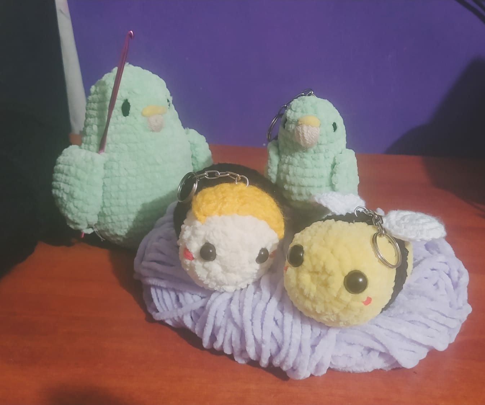

Crisgurumis Artes y Manualidades
Sitio local de Pruebas
Sitio online de Pruebas
Todas las descripciones y precios dados abajo no son reales, son precios y descripciones de broma pero no muy alejados de la realidad

Conejo
Amigurumi de un conejo creado exclusivamente para personas de alto interés en los conejos.
Precio: 300$ MXN
Link
Amigurumi de un duende verde de una saga cuyo nombre no puedo decir por aquí
Precio: 500$ MXN
Magikarp
Una carpa mágica que concede deseos, o al menos eso dicen por ahí.
A veces es vendida a muy altos precios a compradores incautos.
Precio: 100$ MXN 9999$ MXN
Cabra Loca
Algunos dicen que es la encarnación en peluche de Baphomet pero en verdad es una cabra loca que se cree satánica.
Precio: 250$ MXN
Bojji
Un pequeño gigante al cual le robaron toda su fuerza y por eso se convirtió en peluche.
Precio: 250$ MXN
Topo Gigio
Ratón diavólico que es el mismísimo diablo, no lo compres.
Precio: 666$ MXN
Renacuajo caliente
Un renacuajo enfermo de paperas, tiene calvicie y además con enanismo.
Precio: gratis$ MXN 100$ MXN
Llama
La llama llama a la llama en llamas.
Precio: 300$ MXN

Abejas
Abejas.
Precio: 80$ MXN abejas$ MXN
Cerdito de pripi
¿Quien es pripi? No se sabe, pero este es su cerdo.
Precio: 300$ MXN o 30 Iguanas
Llaveros
¿Que esperabas? ¿Un chiste acerca de llaveros?.
Precio: 120$ MXN
Manzanito Palomino
A veces se cree un Manzanito y otras veces se cre un palomino.
Precio: 150$ MXN
Un meme
Un meme de un mono blanco que se rasca la panza.
Precio: 60$ MXN

Otro meme
Otro amigurumi de este mismo meme (mano no incluida).
Precio: 60$ MXN
Una rata bien eléctrica
Rata elétrica deformada intencionalmente para evadir los derechos de autor bajo el criterio de parodia.
Precio: 120$ MXN
El perro naranja de los memes
El perro naranja con un tumor en la nariz que le venden por la calle a niños malcriados.
Precio: 200$ MXN
Dos poli
Poliguir y polirap o como se escriba pero falta el poliwey
Precio: 200$ MXN
Sombrero para gatos rabiosos
Este sombrero aumenta las estadísticas de daño mágico de tu gato en 10 puntos.
Precio: 100$ MXN
Topo naranja
Un topo naranja bien deforme el hijosuputamadre.
Precio: 100$ MXN
Toromax
Un toro café con anemia en los cuernos que carga un libro en la espalda.
Precio: 400$ MXN
Oveja punk
Esta oveja dejó de lado su vida de godinez para convertirse en punk, una oveja muy rebelde.
Precio: 300$ MXN
Churromingos
Los churomoyos o también conocidos como Yumingos son criaturas mágicas que te espían por la noche y comen duendes, que miedo la verdad.
Precio: 100$ MXN